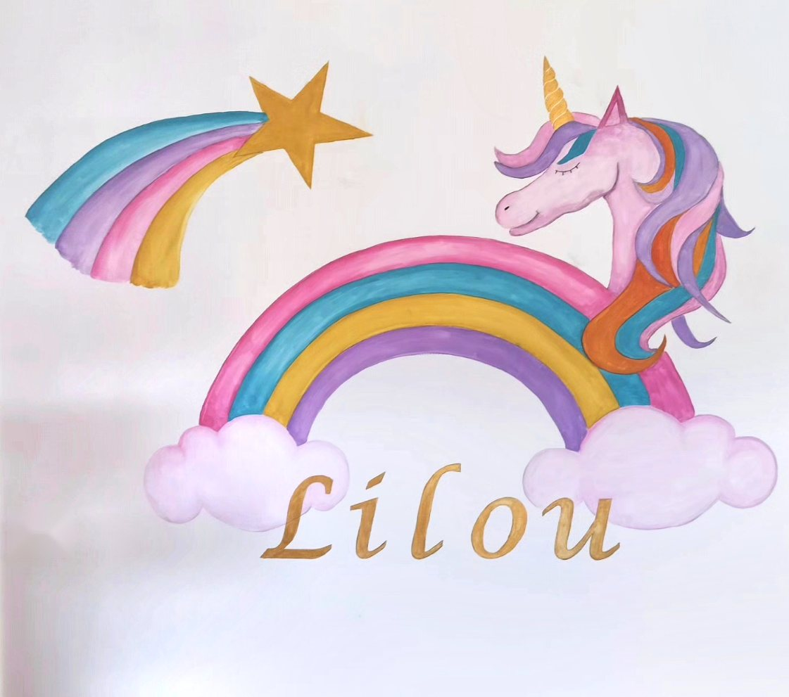

Een greep uit de ramen die ik met de hand schilderde: halloween in Wetteren en Merchtem, kerst bij restaurant de Paardenkouter, lente in Mechelen, een trouwraam in Lokeren en nog veel meer.
Gooi ze rond, of kies hieronder een seizoen.
Al mijn ramen
Van halloween in Wetteren en Merchtem tot kerst bij de Paardenkouter, lente in Mechelen en een trouwraam in Lokeren.
Op de muurLuiaardMuurschildering · luiaard op een tak

KinderkamerEenhoornMuurschildering · kinderkamer
OOK ZO'N RAAM?
Een seizoensvitrine, een raam voor de solden of een opening, of handgeschilderde belettering op je ruiten? Vertel me welk seizoen, welke zaak en hoe groot je raam is. Ik kom bij je langs om te schilderen.